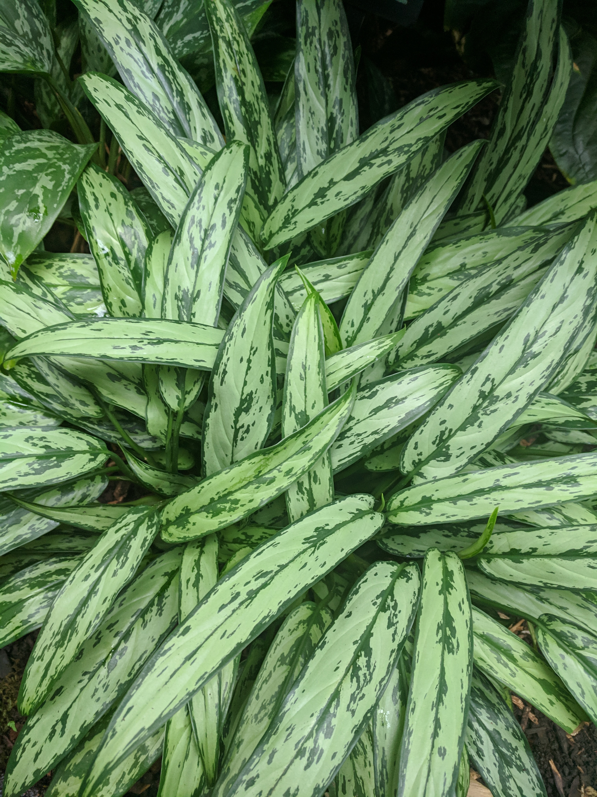

8 Plants That Can Survive Low Light Spaces

Belly Michaels | July 15, 2022
What are plants that can live in low light spaces?
1. Satin Pothos (Silver Satin)
2. Lucky Bamboo
3. Chinese Evergreens (Aglaonema Plants)
4. Heartleaf Philodendron
5. Bromeliads
6. Fittonias
7. Dieffenbachia Plants
8. ZZ Plants
If your home doesn’t get much natural light, then you might feel like you can’t add any plants to your space. But did you know that regardless of low light conditions, you can still grow lush plants indoors?
You read that right. There are plenty of plants that are tolerant — and even thrive — in places without plenty of sunlight.
So, if you’re looking for the best low-light plants that will survive even in the dimmest corners of your home, read on. We’ve compiled a list of options for you to choose from!
Satin Pothos (Silver Satin)
The Satin Pothos variety is pretty similar to other pothos plants, except its small and matte green leaves are speckled in pretty silver color — meaning this little plant will add just the right amount of flair to any space.
This plant is an aggressive grower — especially in bright indirect light. While this means it can choke out or overpower other plants, it becomes tamer when grown indoors and in a low-light area. Plus, this plant is no-fuss, and only requires the occasional watering and pruning to keep its vines in check. This makes it perfect for beginner plant parents!
Lucky Bamboo
Lucky bambooplants are a popular plant gift, especially for housewarming presents. It is said to bring good luck and fortune to the home — and is well-known for being nigh-indestructible.
Though this plant does prefer some light, it will gladly grow even in fully shaded corners of your home. These plants are small enough to fit on tabletops, and all they need is soil that’s not kept too damp, and to be away from any drafty areas of your home. So, a lucky bamboo plant is perfect for keeping on your desk, coffee table, or bookshelf.
Chinese Evergreens (Aglaonema Plants)
The Chinese Evergreens, also known as Aglaonema plants, are one of the most durable options that you can buy. It’s so low-maintenance that it can survive without water for three weeks at a time, and can even continue growing normally in artificial light! This means it’s perfect for secluded rooms that receive little to no sunlight in the day.
In fact, it prefers to be kept in low light conditions, as exposure to direct sunlight can quickly scorch its delicate oval leaves. We recommend keeping them in the shade as much as possible.
Heartleaf Philodendron
Also known as the sweetheart plant thanks to the adorable shape of its leaves, this plant can handle dim rooms like a champ. It prefers medium-light conditions but grows just fine in low-light areas.
The only thing you need to consider when caring for the >heartleaf philodendron is that it likes to be kept dry in between waterings. And, it has a trailing habit, but these vines can easily be trained to grow around posts or “totems” to keep cleaner-looking foliage.
Bromeliads
Though they are considered tropical plants, you’ll be surprised to find out that bromeliads can survive without much sunlight! They can, in fact, survive on artificial light alone, if needed.
Even if this plant has large and brightly colored leaves, Bromeliads prefer staying in shady, cool areas. They can keep their vivid colors even without direct sun. The one thing they do need to thrive in your home is lots of humidity, so you can stick this plant in your bathroom or kitchen!
Fittonias

Better known as nerve plants or mosaic plants,Fittonias do prefer brighter light. But, this plant is extremely forgiving of neglect, so it can take low-light conditions well. And, like bromeliads, they love humidity — so stick a few of these plants by your bathroom counter!
One thing to note is that more vibrant varieties, like our Red fittonia variety, can end up looking less brightly colored when kept too long in sunless areas. So, we do recommend moving them occasionally to receive some indirect or filtered light.
Dieffenbachia Plants

Dieffenbachia plants, like ourDieffenbachia Oerstedii and Marian Dieffenbachia , prefer to be in places with filtered light. When exposed to too much sunlight, it can cause the plant to wilt — and even become burnt. They can tolerate dimmer rooms, though the Marian Dieffenbachia plant will grow a bit slower than usual because of its variegated leaves.
Be extra careful of keeping these plants in a shaded room when it is producing new leaves, as these are especially sensitive to light.
ZZ Plants
Another plant that we consider nigh indestructible — and perfect for beginner plant parents to start with — is the ZZ plant . It’s very low-maintenance and tolerant of most things, including a lack of natural sunlight. So, you can technically stick this plant in any low light corner in your home, and it will survive with little care!
Even the most hands-off plant parents can keep this plant alive and growing well, as long as it is watered occasionally and kept in a dry environment. It’s the perfect choice for a windowless office or the dark corners of your kitchen and living room.
Look what you need for
Check our plants based on what you need. We got a variety of ornamental plants just for you!
SHOP NOWRecent Posts